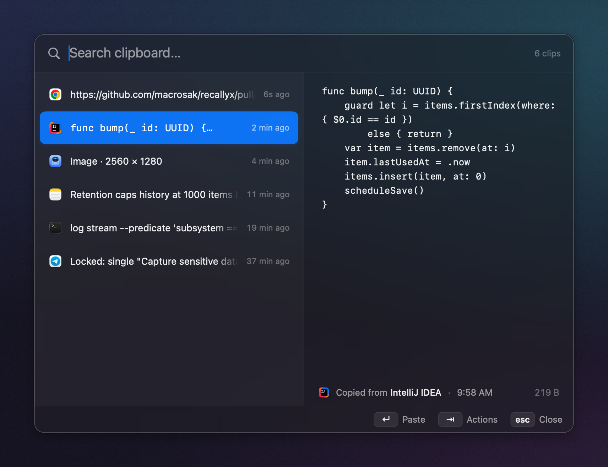
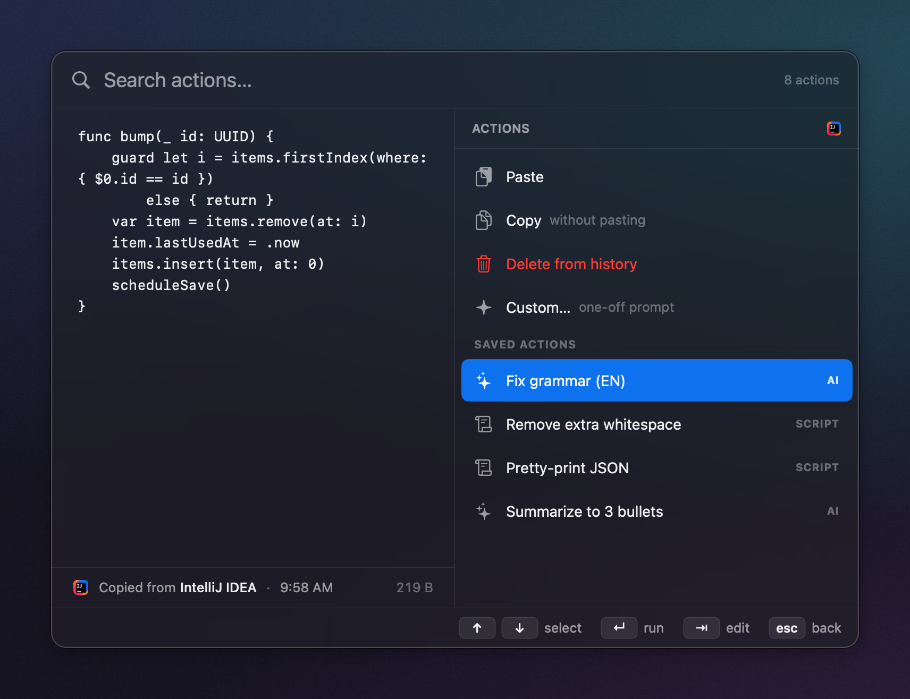

MIT · macOS 13+ · Apple silicon
Your clipboard,
programmable
Recallyx keeps everything you copy — searchable, private, on your Mac — then runs bash + AI pipelines on any clip and pastes the result where you were. Native. Free. Open source.
- ⌘⇧V
- Open the history panel, anywhere.
- ⌃⇧V
- Grab the selection, transform in place.
Latest release · zero dependencies · no account

01the actions layer
Copy → transform → paste.
Every clip has an action menu. An action is a pipeline of script
(bash) and AI steps that reshape the text and paste it
back — right into the app you were in.
{"event":"deploy","status":"ok","dur_ms":812,"svc":"api"}• Deploy of "api" succeeded
• Finished in 812 ms
• No errors reported
Ships with a developer pack — JWT decode, Base64, URL encode/decode, pretty-print &
minify JSON, slugify — all offline, no key. Or write your own bash step.
02what it is
A clipboard that
reads like a tool.
No Electron, no telemetry, no subscription. One 64-bit menu-bar app, two hotkeys, and your own keys.
-
01
Programmable
Chain
bashand AI steps into a pipeline on any clip — reorder them, toggle them, edit one before it runs. Most clipboard managers stop at history and snippets. This one runs transforms. -
02
Any model, or none
AI steps run on the provider you pick, per step. Cloud uses your own API key; Ollama and Apple on-device need no key and never leave your Mac — a fully offline, private setup if you want one.
-
03
Yours, on your Mac
History lives on disk, on your machine. Password fields are skipped, nothing leaves without your key, and the whole thing is MIT-licensed. Sync across your Macs through your own iCloud — no server of ours. An iPhone companion is in testing.

03keyboard-native
Everything is a keystroke.
⇥ opens the actions for the highlighted clip — built-ins, your saved script and AI actions, or a one-off Custom… prompt. ⇥ again edits a saved action for just this run; the saved version stays untouched.
⌘1–9 quick-pastes or quick-runs the Nth row. ⌃⇧V grabs the current selection in any app — even Chrome — and transforms it in place.
04install
Two minutes, no account.
Apple silicon Mac on macOS 13 or later. Drag, clear, launch.
-
1
Download the disk image
Grab the latest
Download the latest DMG.dmgfrom GitHub Releases and drag Recallyx into Applications. -
2
Clear the quarantine flag
Builds aren't notarized by Apple yet, so Gatekeeper blocks the first launch. This one command tells macOS the app is safe to open. Notarized builds are coming.
xattr -dr com.apple.quarantine /Applications/Recallyx.app -
3
Launch it
Recallyx lives in your menu bar. Press ⌘⇧V to open the history panel and you're set.
Prefer to build it yourself? Clone the repo and run ./scripts/bundle.sh —
Swift Package Manager, zero dependencies, Command Line Tools only.
Read the docs →